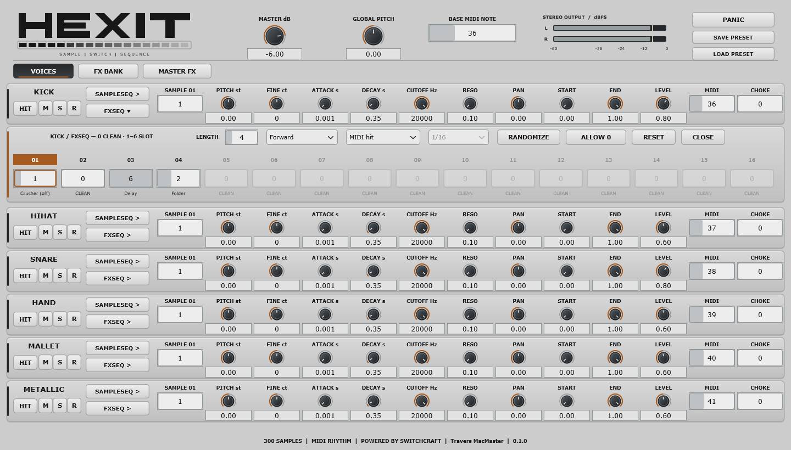
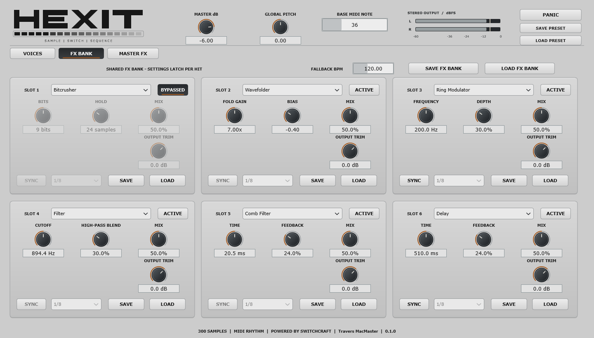
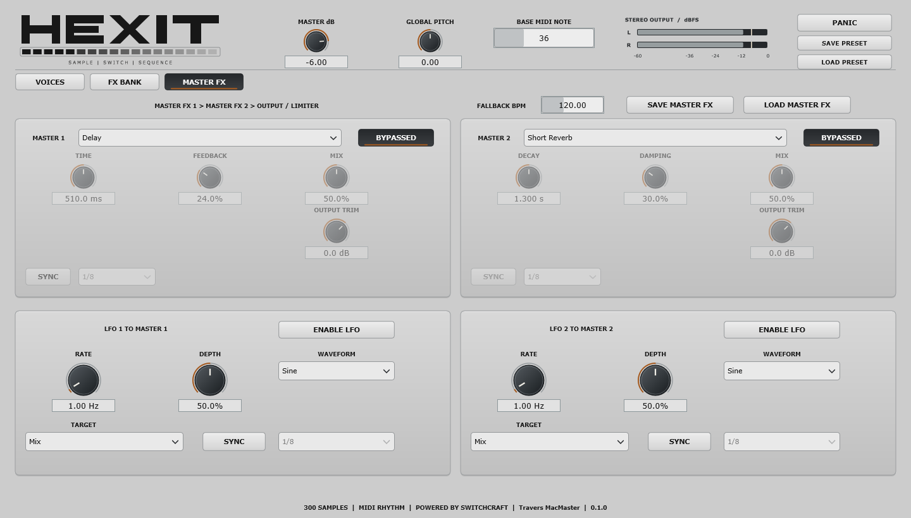
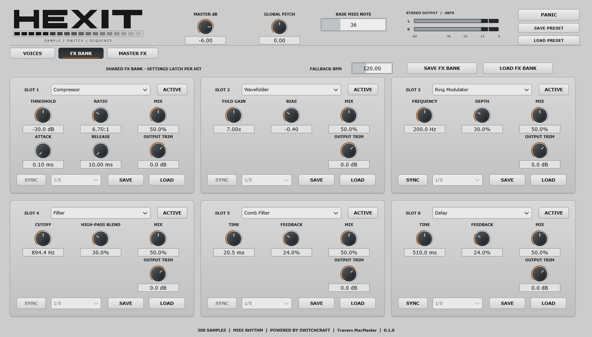

A machine by Travers MacMaster
HEXIT
HEXIT is a six-voice sample instrument with sample switching, per-voice sample and effect sequences, a shared six-slot FX bank, and master effects with LFO modulation.

Inside the instrument
What it does
- 01Six sample voices: Kick, Hihat, Snare, Hand, Mallet and Metallic
- 02Per-voice sample selection, pitch, envelopes, filter, pan and sample boundaries
- 03Independent sample and FX slot sequences
- 04Six shared FX slots with per-hit settings
- 05Compressor, bitcrusher, wavefolder, ring modulation, filter, comb filter and delay views
- 06Two master effects with independent LFO controls
- 07Preset and FX bank save/load controls
Explore the interface







